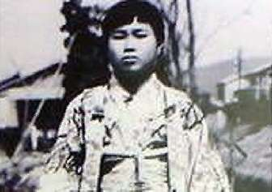
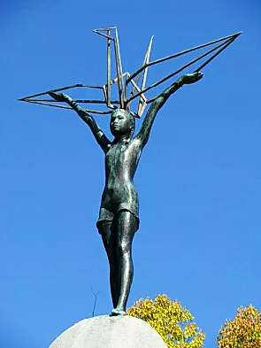

Борис Акунин
Мой календарь
Завершить первую неделю года хочу напоминанием вот об этой девочке.
Ее имя - Садако, она родилась в этот день в 1943 году. Когда я учился в советской школе, мы все про нее знали, а сейчас в России маленькую японку почти забыли. Это меня ужасно печалит. И из-за самой Садако, забывать которую ни в коем случае нельзя, и потому что это очень красивая история.
В двухлетнем возрасте Садако пережила атомный взрыв в Хиросиме. Повезло - не погибла и вроде бы даже уцелела. Росла себе девочка как девочка. А в одиннадцать лет оказалось, что у нее лучевая болезнь и что жить остается считанные месяцы.
Кто-то рассказал больной, что, если сделать тысячу оригами в виде бумажных журавликов, исполнится любое желание.
Желание было понятно какое - Садако хотела жить.
Она складывала журавликов всё время, когда у нее были на это силы. Сделала их не тысячу, а тысячу триста. И всё равно умерла.
Но вы ошибаетесь, если думаете, что это притча о тщетности надежд и невозможности чуда.
Вообще-то это было настоящее чудо, что одна больная девочка заставила весь мир заговорить об угрозе ядерной войны. Если бы на мир не произвела впечатление душераздирающе прекрасная история про тысячу бумажных журавлей, если б она не превратилась в фильмы, книги, песни и даже мюзиклы, очень может быть, что через несколько лет, во время Карибского кризиса, всё закончилось бы совсем иначе.
Да и не только в ядерной угрозе дело. Учимся у Садако Сасаки главному: какие бы беды ни происходили, нужно быть стойким, не отчаиваться и вести себя красиво. Даже если всё плохо закончится, красота останется.
